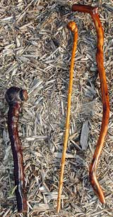

MATTHEW T. STALLBAUMER
You can craft walking sticks like those on the right from hard woods such as oak, hawthorn or Osage orange. The club-like shillelagh on the left is reminiscent of those made in Ireland prior to 800 CE.